Dar forma a la bóveda
Pintura
¿Un muro o una bóveda entera que cuente una historia de punta a punta?
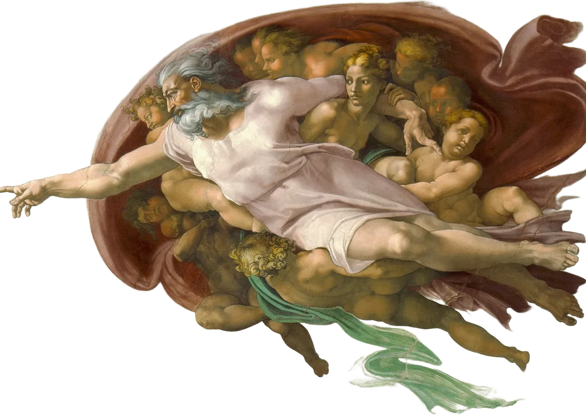
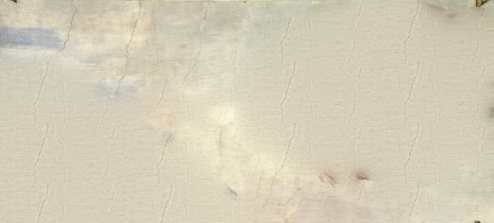
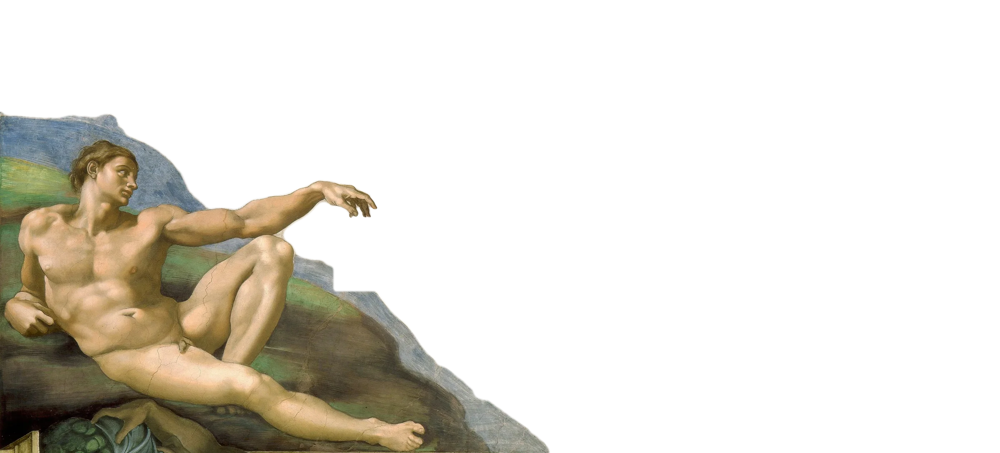
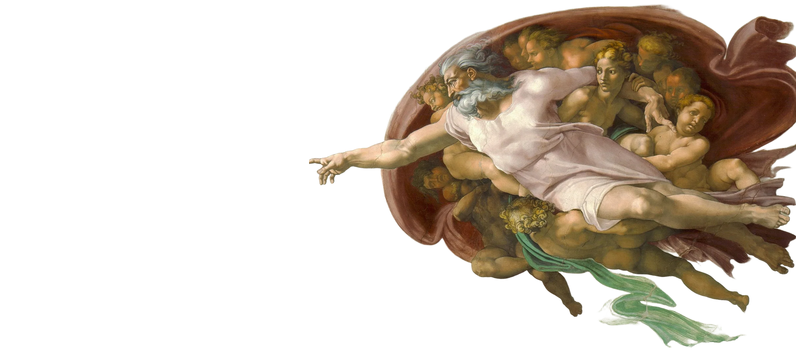
«La creación de Adán» · Fresco · h. 1511 BajaEl fresco se pinta sobre el revoque aún húmedo, así que cada día se prepara solo la superficie que da tiempo a terminar. Así está hecha la escena que acabas de recorrer. Del boceto a sanguina al andamio, cada obra se plantea para el lugar donde va a vivir.
Del techo de una capilla a la cúpula de una basílica: cada encargo se piensa desde el oficio que pide.
¿Un muro o una bóveda entera que cuente una historia de punta a punta?

¿Una figura en mármol que se sostenga sola, a la escala que pida la plaza?
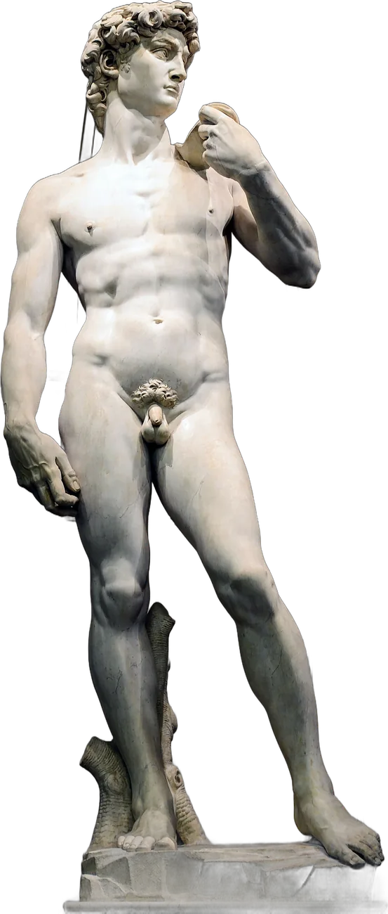
¿Un edificio que se vea desde toda Roma? La cúpula de San Pedro se cerró en 1590, siguiendo su proyecto.
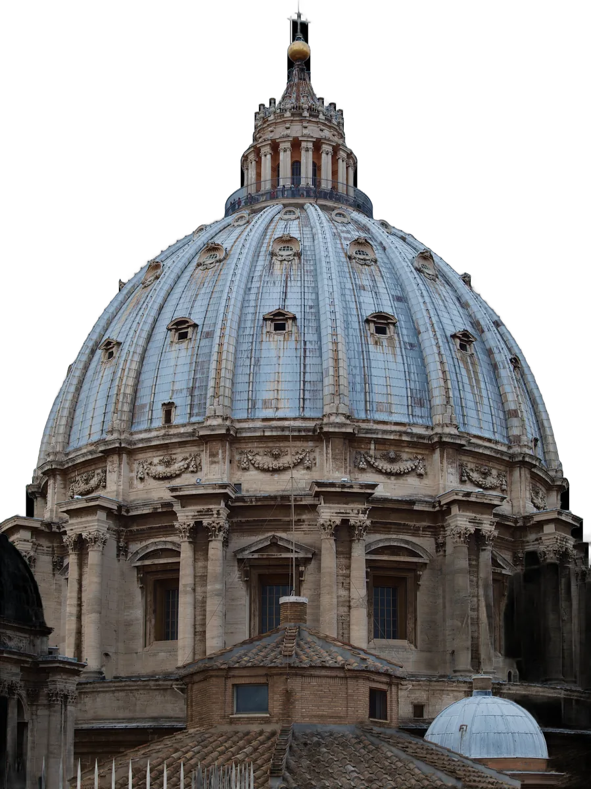
¿Ver la obra en papel, a sanguina, antes de que se empiece a picar o a pintar?
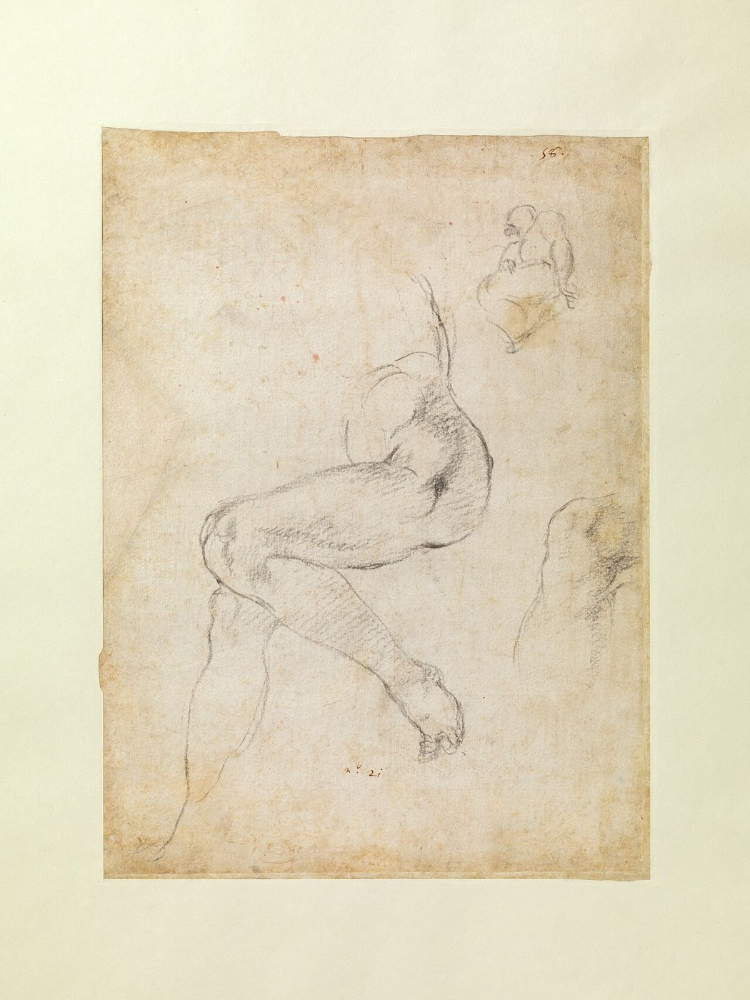
Cada técnica se elige según el lugar, la escala y el tiempo de que se dispone.
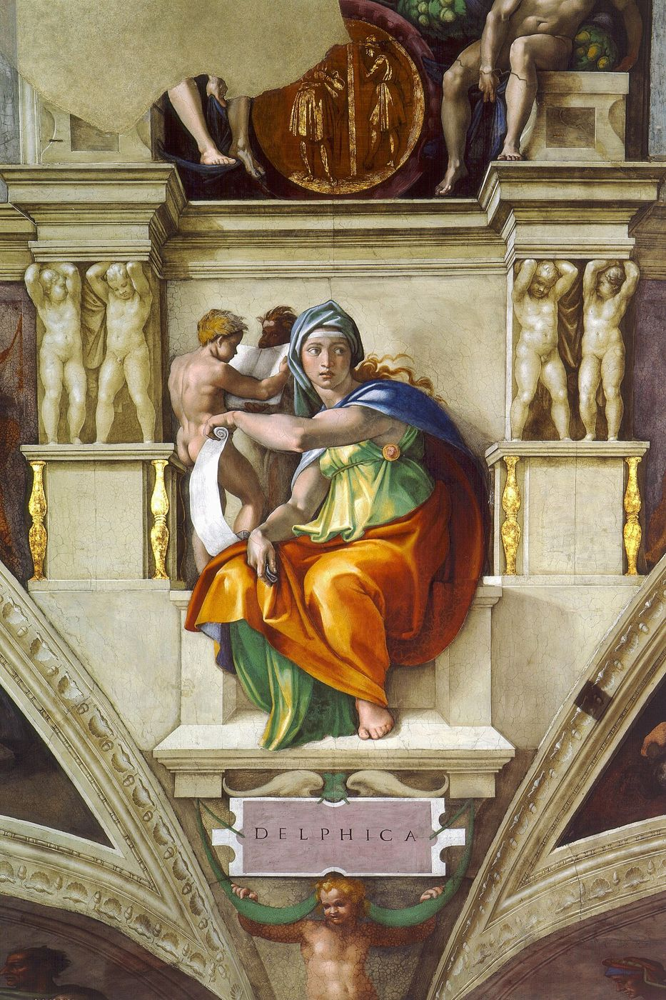
El fresco no admite arrepentimientos.
El color entra en el revoque mientras está húmedo y queda fijado para siempre. Por eso cada jornada se prepara solo el trozo de muro que da tiempo a pintar antes de que seque.
Ver pintura →Antes de subir al andamio, la figura se estudia en papel.
Un pie, una espalda, los pliegues de un manto: cada pose se dibuja del natural hasta entenderla. Muchos de estos estudios se conservan hoy en museos de todo el mundo.
Ver dibujos →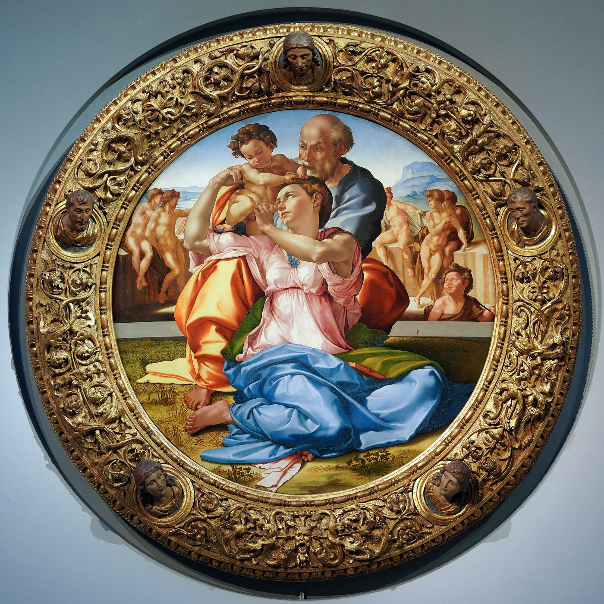
El Tondo Doni se pintó para la casa de Agnolo Doni, en Florencia.
Capillas, retablos, tablas para una casa o un sepulcro entero. Cada encargo empieza por entender para quién se hace la obra y dónde se va a mirar.
Cómo encargar →Las obras se conservan en la Capilla Sixtina, los Uffizi, la National Gallery y otros museos. Reproducciones de dominio público vía Wikimedia Commons.
Preguntar por un encargoPapas, banqueros y familias florentinas encargaron capillas, retablos y tablas para sus casas. Cada proyecto se plantea a medida: el lugar, la luz que recibe y quién la va a mirar.
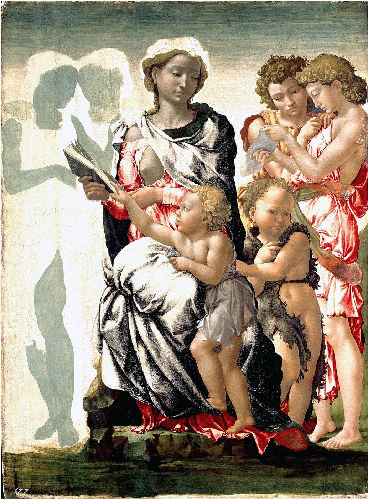
Antes de proponer nada veo el muro, la capilla o la sala: la luz, la altura y desde dónde se mirará la obra.
Preparo estudios a sanguina y un cartón a tamaño real para trasladar la composición al muro o a la tabla.
Con los dibujos delante acordamos tema, figuras, materiales y plazos.
En el fresco, jornada a jornada sobre el revoque húmedo. En tabla, por capas de temple u óleo.
La obra se descubre en su sitio, terminada y lista para quedarse.
El precio depende de varios factores. Envíame fotos o planos del lugar y una idea del tema, y te respondo con una propuesta.
Más de setenta años de oficio, de 1490 a 1564, para los Médici, varios papas y la República de Florencia.
disecciones en Santo Spirito · anatomía del natural
la Sixtina, el David y la cúpula de San Pedro
terribilità · la bóveda casi sin ayudantes
el mármol, elegido en Carrara · un andamio de su invención
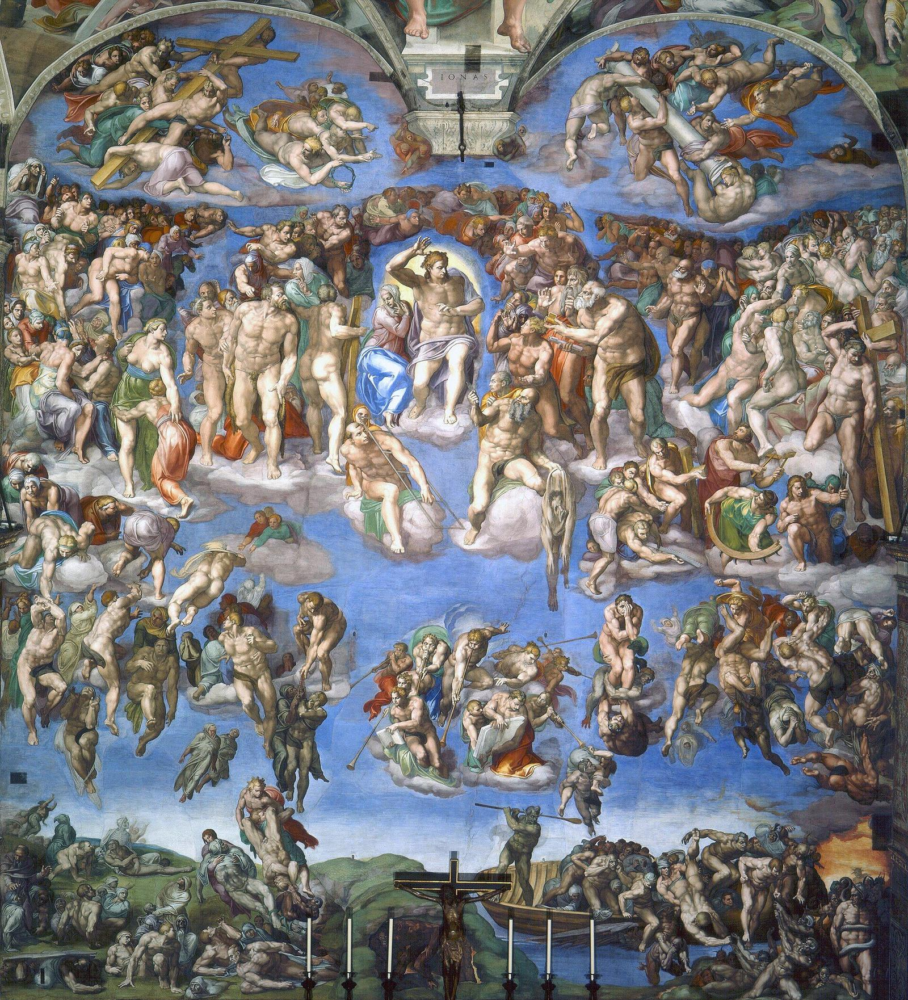
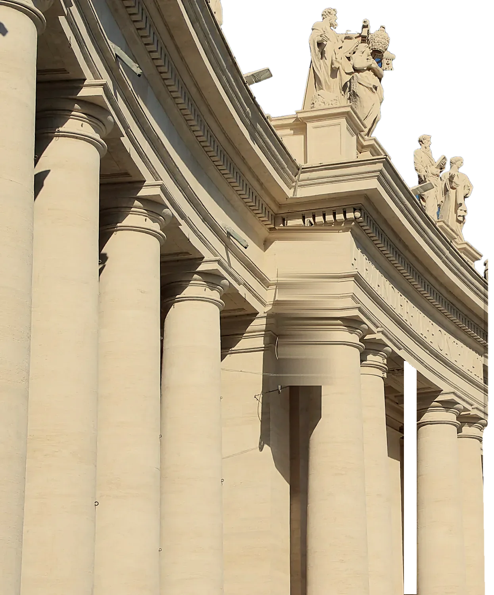
Junto a San Pedro, en la Capilla Sixtina, el muro del altar: casi cuatrocientas figuras que giran alrededor de Cristo juez, sin arquitectura que las sostenga.
Si estás pensando en una obra por encargo, escríbeme sin compromiso. Respondo personalmente para valorar el proyecto contigo.